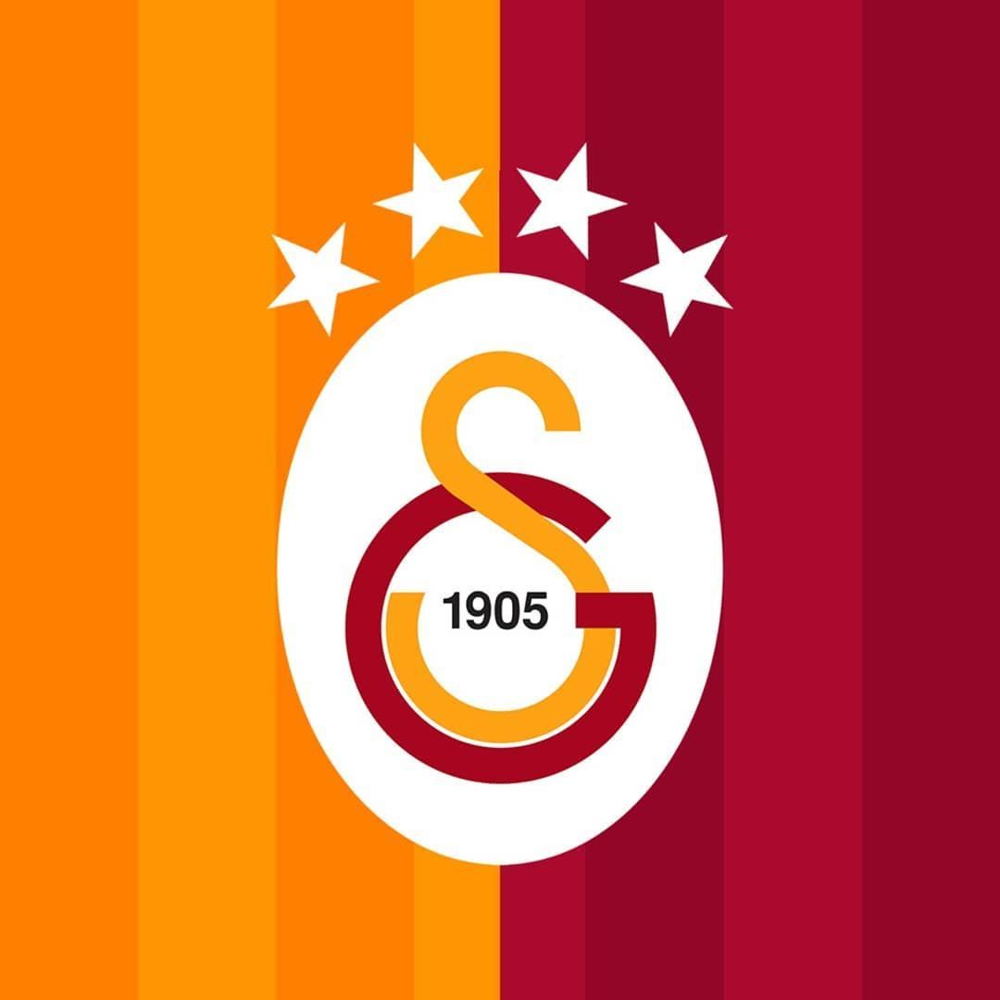
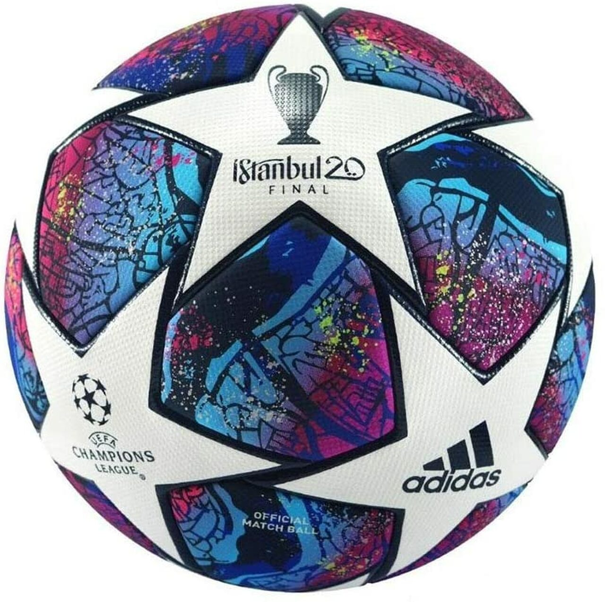
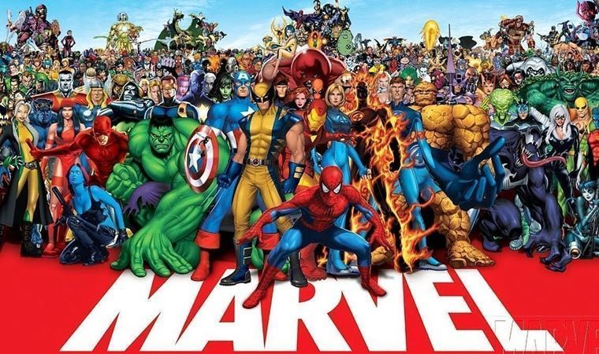

EN SEVDİĞİM DİZİ

How ı met your mother dizisi favori dizim olup himym kısaltılışıyla bilinir.Dizi arkadaşlık sevgisini aşılayan bir sitcom yani durum komedisi dizisidir.
Himym'ı izleyebileceğiniz tüm bölümler için tıklayın=>TIKLA
TUTTUĞUM TAKIM
Çocukluğumdan beri doğuştan taraftarı olduğum Galatasaray Futbol Takımı en büyük ilgi alanlarım arasındadır.Bütün futbol maçlarını kaçırmadan izler,galibiyetiyle sevinir,mağlubiyetiyle üzülürüm.
EN SEVDİĞİM DİZİ
How ı met your mother dizisi favori dizim olup himym kısaltılışıyla bilinir.Dizi arkadaşlık sevgisini aşılayan bir sitcom yani durum komedisi dizisidir.
Himym'ı izleyebileceğiniz tüm bölümler için tıklayın=>TIKLA
EN SEVDİĞİM SPOR
Hemen hemen bütün spor dallarını yapmaktan zevk alırım fakat futbolun yeri çok ayrıdır.Çocukluktan beri en sevdiğim spor branşı olan futbolu çocukluktan beri oynayıp,birçok takımda da oynamışlığım vardır.Hem gerçek hayatta futbol oynamayı hem de sanal ortamda futbol oyunlarını oynamaktan aşırı zevk alırım.
EN SEVDİĞİM FİLM
Film izlemek en sevdiğim hobilerim arasındadır ve en sevdiğim filmi seçmek te çok zordur her filmin tadı ve zevki başkadır benim için fakat marvel yapımı olan filmler ayrı bi tatmin eder beni.İçerisinde birçok süper kahramanın olması ve bütün süper kahramanlarının ayrı ayrı yetenekleri olması filmin en sevdiğim yanlarındandır.
Marvelin bütün filmlerini kronolojik olarak görmek için tıklayın=>TIKLA